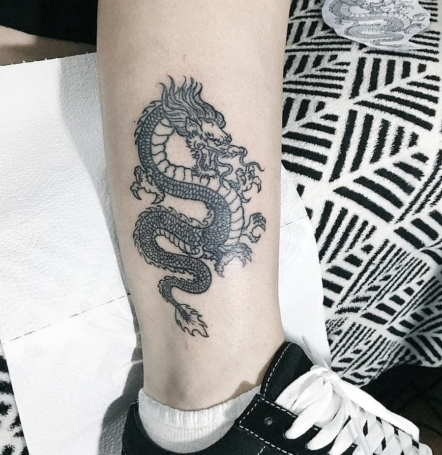

septo

O piercing no septo leva de seis a oito meses para cicatrizar por completo, mas essa rotina rígida de limpeza só precisa durar um mês. Nesse período, mergulhe o local na solução salina três vezes ao dia. Além disso, durante esse mês você deve evitar o contato com o piercing e dar uma pausa no uso de cremes e maquiagem. .
tattoo
Evite ao máximo expor a tatuagem ao sol no primeiro mês, principalmente sem fator de proteção solar, quando este já estiver autorizado para uso. “Logo após a realização da tattoo, eu não recomendo o uso de nenhum produto a não ser um sabonete neutro e uma pomada cicatrizante por, pelo menos, 15 dias”blush

base